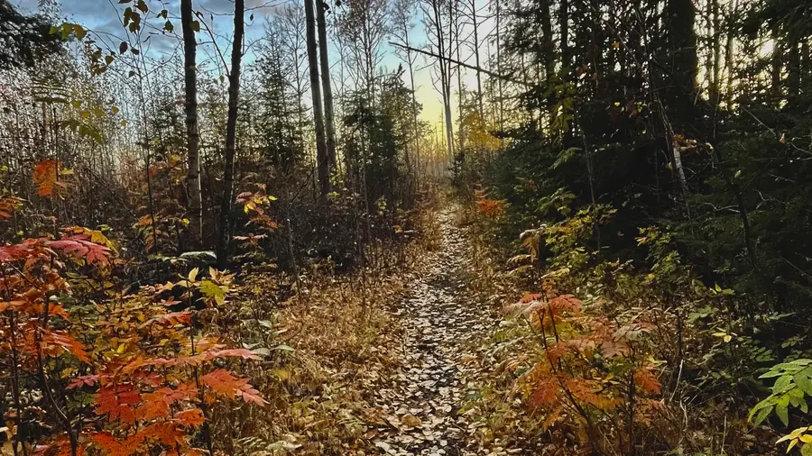

TRAIL DIRECTORY
≈Clearwater River TrailSnye Point Park, downtown Fort McMurray · in town~3 kmAllTrails→
Clearwater River Trail
Begins at Snye Point Park; parking lot and boat launch at the trailhead. Paved path follows the Clearwater River north.
Get directions ↗~3 km
ApproximateAllTrails
View source ↗Paved, easy riverside recreation path with interpretive signs, picnic tables and green spaces along the Clearwater River. Gentle grade with open river and golf-course views; little shade, so bring sun protection.
🌲Abasand Trail LoopAbasand / city centre, Fort McMurray · in town~3.4 kmExplore Magazine→
Abasand Trail Loop
Riverside loop near the city centre along the Athabasca River; benches overlook the water.
Get directions ↗~3.4 km
ApproximateExplore Magazine
View source ↗An easy riverside walking and running escape close to downtown, with quiet spots to sit and watch the Athabasca River in any season.
≈Horse River Valley TrailFort McMurray / Abasand · in town~1.5 hoursFMWB→
Horse River Valley Trail
Access via Oil Sands Discovery Centre area / Abasand historic walking tour; follow local trail map.
Get directions ↗~1.5 hours
ApproximateFMWB
View source ↗Historic Abasand Oils Ltd. area; steep sections.
🌲TOTAL Aboriginal Interpretive TrailMacDonald Island Park, Fort McMurray · in town~1.2 km loopsTravel Alberta→
TOTAL Aboriginal Interpretive Trail
On the west (Athabasca River) side of MacDonald Island; small parking lot at the end of MacDonald Drive. Also reachable on foot from Thickwood across the river.
Get directions ↗~1.2 km loops
ApproximateTravel Alberta
View source ↗Riverside art walk showcasing Western Canadian Indigenous artists. The Sacred Teachings Project features seven sculptures — wisdom, love, humility, courage, honesty, respect and truth — alongside the Miquwahkesis project of 28 hand-painted foxes. Easy, wheelchair-friendly packed surface; first of its kind in Fort McMurray.
≈Crane Lake LoopFort McMurray area · in town3.1 kmExplore Magazine→
Crane Lake Loop
Use local Crane Lake access/parking; verify on Google Maps before publishing.
Get directions ↗3.1 km
ApproximateExplore Magazine
View source ↗Interpretive signs and bird viewing noted.
🌲Birchwood Trails systemFort McMurray · in town135 km systemRMWB→
Birchwood Trails system
Start at Doug Barnes Cabin, 190 Tamarack Way; access also from Thickwood, Timberlea and Dickinsfield.
Get directions ↗135 km system
ApproximateRMWB
View source ↗Municipal maintained trail system.
🌲Deer Trail to Bear Trail LoopBirchwood / Fort McMurray · in town4.8 kmExplore Magazine→
Deer Trail to Bear Trail Loop
Access through Birchwood Trails from Thickwood/Timberlea/Dickinsfield trailheads.
Get directions ↗4.8 km
ApproximateExplore Magazine
View source ↗Shorter Birchwood loop option.
🌲Deer, Lynx and Wolf TrailBirchwood / Fort McMurray · in town10.8 kmExplore Magazine→
Deer, Lynx and Wolf Trail
Access through Birchwood Trails from neighbourhood trailheads in Thickwood/Timberlea/Dickinsfield.
Get directions ↗10.8 km
ApproximateExplore Magazine
View source ↗Linked Birchwood route.
≈Thickwood Falls TrailThickwood, Fort McMurray · in town~1.4 kmAllTrails→
Thickwood Falls Trail
Well-travelled path from Timberline Drive down to Conn Creek; ropes help on the steep section down to the falls. Uphill on the return.
Get directions ↗~1.4 km
ApproximateAllTrails
View source ↗A waterfall spilling over a layered cliff, with a small pool at the base — wade in on a hot day, or catch the icicles in winter. The area is sprayed with herbicide, so avoid touching the plants. Short but steep in spots.
≈Thickwood River Valley trail networkThickwood / Fort McMurray · in town25 trails; longest 2.8 kmTrailforks→
Thickwood River Valley trail network
Use Trailforks Thickwood River Valley map for parking/trailhead details.
Get directions ↗25 trails; longest 2.8 km
ApproximateTrailforks
View source ↗Trailforks lists trail status and segments.
≈Thickwood River Valley: HeaderThickwood River Valley · in town2.8 kmTrailforks→
Thickwood River Valley: Header
Within Thickwood River Valley trail area; verify trailhead on map.
Get directions ↗2.8 km
ApproximateTrailforks
View source ↗Trailforks says this is the longest trail in this area.
≈Thickwood River Valley: Malcolm Young (AC/DC)Thickwood River Valley · in townnot listed in sourceTrailforks→
Thickwood River Valley: Malcolm Young (AC/DC)
Within Thickwood River Valley trail area; verify trailhead on map.
Get directions ↗not listed in source
ApproximateTrailforks
View source ↗Listed as one of the best hiking trails in the area.
≈Thickwood River Valley: Swamp ThingThickwood River Valley · in townnot listed in sourceTrailforks→
Thickwood River Valley: Swamp Thing
Within Thickwood River Valley trail area; verify trailhead on map.
Get directions ↗not listed in source
ApproximateTrailforks
View source ↗Listed as one of the best hiking trails in the area.
🌲Thickwood Trail LoopThickwood, Fort McMurray · in town9.8 kmExplore Magazine→
Thickwood Trail Loop
Start from Thickwood neighbourhood access points into the Birchwood ravine trail network.
Get directions ↗9.8 km
ApproximateExplore Magazine
View source ↗Urban-wilderness loop.
🚲Wood Buffalo Bike Park trail networkFort McMurray · in town~8 km / 5 miles totalTrailforks→
Wood Buffalo Bike Park trail network
Use Wood Buffalo Bike Park trail map for parking and trailhead details.
Get directions ↗~8 km / 5 miles total
ApproximateTrailforks
View source ↗Trailforks lists 26 trails; current access/status should be checked.
🚲Wood Buffalo Bike Park: Decision TimeWood Buffalo Bike Park · in town~0.92 km / 3,031 ftTrailforks→
Wood Buffalo Bike Park: Decision Time
Within Wood Buffalo Bike Park; verify exact trailhead in Trailforks/Google Maps.
Get directions ↗~0.92 km / 3,031 ft
ApproximateTrailforks
View source ↗Trailforks says this is the longest in the bike park.
🚲Wood Buffalo Bike Park: Sick B'Wood Buffalo Bike Park · in town~0.24 km / 787 ftTrailforks→
Wood Buffalo Bike Park: Sick B'
Within Wood Buffalo Bike Park; verify exact trailhead in Trailforks/Google Maps.
Get directions ↗~0.24 km / 787 ft
ApproximateTrailforks
View source ↗Popular trail.
🚲Wood Buffalo Bike Park: Wood Buffalo TrailWood Buffalo Bike Park · in town~0.3 km / 1,010 ftTrailforks→
Wood Buffalo Bike Park: Wood Buffalo Trail
Within Wood Buffalo Bike Park; verify exact trailhead in Trailforks/Google Maps.
Get directions ↗~0.3 km / 1,010 ft
ApproximateTrailforks
View source ↗Green/easy trail.
🚲Wood Buffalo Bike Park: You TurnWood Buffalo Bike Park · in town~0.20 km / 669 ftTrailforks→
Wood Buffalo Bike Park: You Turn
Within Wood Buffalo Bike Park; verify exact trailhead in Trailforks/Google Maps.
Get directions ↗~0.20 km / 669 ft
ApproximateTrailforks
View source ↗Short trail segment.
≈Hangingstone Provincial Recreation AreaHighway 63 South · ~20 kmvariesFMWB→
Hangingstone Provincial Recreation Area
Highway 63 South, about 35 km south of Fort McMurray.
Get directions ↗varies
ApproximateFMWB
View source ↗Small campground and day-use setting.
≈Gregoire Lake Provincial Park trailsGregoire Lake · ~35 km~6 km loop/trailsExplore Magazine→
Gregoire Lake Provincial Park trails
Take Hwy 63 south then Hwy 881 east/south toward Gregoire Lake Provincial Park.
Get directions ↗~6 km loop/trails
ApproximateExplore Magazine
View source ↗Park also confirms walking/cycling trails.
≈Gregoire Lake Campground / Park accessGregoire Lake · ~36 kmvariesAlberta Parks→
Gregoire Lake Campground / Park access
Campground on northwest shore of Gregoire Lake, about 29 km southeast of Fort McMurray on Hwy 881.
Get directions ↗varies
ApproximateAlberta Parks
View source ↗Use Alberta Parks for official park access information.
🦬Wood Bison Getaway & Matcheetawin Discovery TrailReclamation area north of Fort McMurray · ~38 km~4 kmExplore Magazine→
Wood Bison Getaway & Matcheetawin Discovery Trail
North of Fort McMurray off Highway 63 in the oil-sands reclamation area; begins at a stone Wood Bison herd sculpture.
Get directions ↗~4 km
ApproximateExplore Magazine
View source ↗Interpretive trail named after the Cree word Matcheetawin, “beginning place.” Winds through reclaimed land rich with wildflowers; family-friendly. Pair it with the nearby Wood Bison viewpoint.
≈Anzac Day Use AreaAnzac / Gregoire Lake · ~40 kmvariesAlberta Parks→
Anzac Day Use Area
West shore of Gregoire Lake, about 1 km northwest of Anzac.
Get directions ↗varies
ApproximateAlberta Parks
View source ↗Part of Gregoire Lake Provincial Park.
≈Engstrom Lake Provincial Recreation AreaHwy 881 area · ~100 kmvariesFMWB→
Engstrom Lake Provincial Recreation Area
Access from Alberta Highway 881; verify current park directions before publishing.
Get directions ↗varies
ApproximateFMWB
View source ↗Provincial recreation area listing.
≈Maqua Lake Provincial Recreation AreaChard / Stony Mountain · ~115 kmvariesFMWB→
Maqua Lake Provincial Recreation Area
85212 Range Road 90B, Chard; about 50 km from Fort McMurray.
Get directions ↗varies
ApproximateFMWB
View source ↗Lake and day-use area; good recreation listing.
❄Birch Mountains Wildland Provincial Park designated winter trailsNW of Fort McMurray · ~120 kmdesignated routes varyAlberta Parks→
Birch Mountains Wildland Provincial Park designated winter trails
About 135 km northwest of Fort McMurray; summer fly-in only, winter road plus snowmobile access.
Get directions ↗designated routes vary
ApproximateAlberta Parks
View source ↗Access is limited and remote.
🦬Wood Buffalo National Park trail systemWood Buffalo National Park · ~290 kmvariesParks Canada→
Wood Buffalo National Park trail system
Access via Fort Smith / park roads; confirm conditions with Parks Canada.
Get directions ↗varies
ApproximateParks Canada
View source ↗Short strolls and long loops.
🦬Karstland Interpretive TrailWood Buffalo National Park / Salt River · ~292 km750 mTravel Alberta→
Karstland Interpretive Trail
Trailhead at Salt River Day Use Area on Pine Lake Road near southern park entrance.
Get directions ↗750 m
ApproximateTravel Alberta
View source ↗Karst landscape boardwalk/loop.
🦬Salt River Meadows LoopWood Buffalo National Park / Salt River · ~293 km1.5 kmTravel Alberta→
Salt River Meadows Loop
Access from Salt River Day Use Area parking lot.
Get directions ↗1.5 km
ApproximateTravel Alberta
View source ↗Short loop near Salt River.
🦬Salt River South LoopWood Buffalo National Park / Salt River · ~294 km9 kmTravel Alberta→
Salt River South Loop
Access from Salt River Day Use Area parking lot.
Get directions ↗9 km
ApproximateTravel Alberta
View source ↗Longer loop option.
🦬Salt River North LoopWood Buffalo National Park / Salt River · ~295 km7.5 kmTravel Alberta→
Salt River North Loop
Access from Salt River Day Use Area parking lot.
Get directions ↗7.5 km
ApproximateTravel Alberta
View source ↗Longer loop option.
🦬Benchmark Creek Trail / Grosbeak Lake RouteWood Buffalo National Park / Salt River · ~296 kmnot listed in sourceParks Canada→
Benchmark Creek Trail / Grosbeak Lake Route
Salt River Day Use Area map; includes the Grosbeak Lake Route section.
Get directions ↗not listed in source
ApproximateParks Canada
View source ↗Shown on Parks Canada Salt River map.
🦬Salt Pan Lake TrailWood Buffalo National Park / Salt River · ~297 kmnot listed in sourceParks Canada→
Salt Pan Lake Trail
Salt River Day Use Area map.
Get directions ↗not listed in source
ApproximateParks Canada
View source ↗Shown on Parks Canada Salt River map.
🦬Wetland Lookout TrailWood Buffalo National Park / Highway 5 · ~300 kmshort interpretive trailParks Canada→
Wetland Lookout Trail
Highway 5 trail access in Wood Buffalo National Park.
Get directions ↗short interpretive trail
ApproximateParks Canada
View source ↗Lookout over whooping crane habitat.
🦬Pine Lake Lakeside TrailWood Buffalo National Park / Pine Lake · ~305 kmnot listed in sourceParks Canada→
Pine Lake Lakeside Trail
Pine Lake Day Use Area / campground area; use Parks Canada Pine Lake map.
Get directions ↗not listed in source
ApproximateParks Canada
View source ↗Shown on Parks Canada Pine Lake map.
🦬Lane Lake TrailWood Buffalo National Park / Pine Lake · ~306 kmnot listed in sourceParks Canada→
Lane Lake Trail
Pine Lake area; use Parks Canada Pine Lake map.
Get directions ↗not listed in source
ApproximateParks Canada
View source ↗Shown on Parks Canada Pine Lake map.